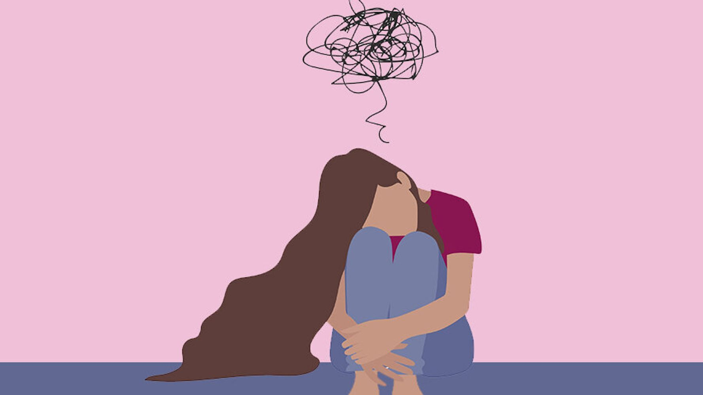

تعيش مجتمعاتنا في المنطقة في ظل أحداث وتجارب قاسية قد تترك آثارًا عميقة على الأفراد والأجيال، إذ يمكن للتجارب الصادمة أن تخلّف بصمات نفسية وعصبية تستمر لفترات طويلة.
أظهرت أبحاث علم الأعصاب أن الصدمة لا تؤثر فقط في الحالة النفسية، بل يمكن أن تؤثر أيضًا في بنية الدماغ ووظيفته، خاصة في المناطق المرتبطة بالذاكرة، وتنظيم العواطف، والاستجابة للخطر.
في هذه المحاضرة سنستكشف كيف يستجيب الدماغ للتجارب الصادمة، ولماذا قد تستمر آثارها لدى بعض الأشخاص أكثر من غيرهم. كما سنتعرّف على الدور الذي تلعبه شبكات الدماغ في الذاكرة العاطفية، والخوف، وتنظيم التوتر.
الهدف من هذا الطرح هو فهم كيف تؤثر الصدمة في الدماغ، وكيف يمكن لهذا الفهم العلمي أن يساعد في تطوير طرق أفضل للدعم والتعافي.
المواضيع الرئيسية التي سيتم تناولها خلال المحاضرة
كيف قد تترك التجارب الصادمة أثرًا نفسيًا وعصبيًا يمتد عبر الزمن.
لماذا تتأثر مناطق الذاكرة والعاطفة والتهيّب للخطر بشكل خاص بعد الصدمة.
عوامل تساعد على تفسير استمرار الآثار لدى بعض الأشخاص دون غيرهم.
قراءة مبسطة لما يعنيه «تنظيم» التوتر في الدماغ في سياق الدعم والتعافي.
هذه المحاضرة موجّهة للجمهور العام وبشكل خاص للعاملين في المجالات النفسية والاجتماعية والمعلمين.
هذه المحاضرة متاحة للحجز لفعاليات، مؤتمرات، مدارس، جامعات، ومؤسسات. تواصلوا معنا لتفاصيل أكثر.
احجزوا المحاضرة الآن